Document basis: The complete supplied Word file, converted into a browser-friendly technical reference. Proposed designs and source-reported results retain their original qualifications. Illustrations are original embedded Word assets.
Project Technical Overview | Project Technical Overview |
|---|---|
Project | Enterprise Automation & Application Maintenance on Customer Service Transformation |
Domain | Transportation, Logistics & Package Delivery |
Business Applications | Care Agent Onboarding Portal CATS – Customer Appeals Tracking System Delivery Delay Automation |
Delivery Approach | Agile / Scrum |
Modules | ITSM,ITOM, CSM, Scoped Applications, Agent Workspace, Flow Designer, IntegrationHub, AI Agents, Virtual Agent, Knowledge Management, SecOps / SIR, ATF |
System Interfaces | Voyage, Scripted REST APIs, REST/SOAP APIs, MID Server, OAuth 2.0, Personal Access Tokens |
Technical Implementation Stack | JavaScript, GlideRecord, Script Includes, Business Rules, UI Actions, UI Builder, React.js, HTML |
Application Lifecycle Management | Azure DevOps, GitLab/Git Source Control, CI/CD, App Repository, Update Sets, Change Management |
Security & Compliance | ACLs, Role-Based Access Control, OAuth 2.0, Scoped Application Security |
Testing & Validation | Automated Test Framework (ATF), Integration Testing, Regression Testing |
Project Summary
The project focuses on modernizing business operations through ServiceNow by automating manual processes, improving case management, streamlining integrations, and enhancing user experience. The solution uses scoped applications, workflows, APIs, AI-assisted capabilities, security controls, and automated deployment processes to support efficient, secure, and scalable enterprise operations.
Business Goals
The primary objective of the CATS project is to enhance customer service delivery by minimizing manual tasks, streamlining case management, and enabling teams to resolve customer issues more efficiently through ServiceNow.
Facilitate Care Agent onboarding by automating user creation and access provisioning. This approach enables new Care Agents to become operational more rapidly by eliminating delays associated with manual approvals and setup processes.
Enhance customer case management by providing CATS agents with a unified workspace to access customer details, manage escalated cases, review customer history, and track case progress. This integration will improve agent efficiency and overall customer experience.
Enhance inter-system communication by integrating ServiceNow with existing logistics systems, such as Voyage, using secure REST APIs. This integration allows agents to access shipment data and other relevant information directly within ServiceNow, reducing the need to switch between multiple applications.
Accelerate and simplify case handling by utilizing ServiceNow Playbooks, Flow Designer, Integration Hub, and AI Agents to automate repetitive tasks and guide agents through the case resolution process. This approach reduces manual work, ensures consistency, and expedites case resolution.
Safeguard customer and agent information by restricting access to authorized personnel through role-based access controls, access control lists (ACLs), and OAuth 2.0. These measures align with the organization's security requirements.
Enhance application quality and deployment by utilizing Git, Azure DevOps pipelines, the ServiceNow App Repository, and the Automated Test Framework (ATF). These tools improve the reliability of development, testing, and deployment processes, facilitate better change management, and enable earlier identification of issues, resulting in fewer deployment problems.
Strengthen team collaboration and reduce manual work by automating notifications, case updates, and communication among Customer Service, Operations, and Logistics. Event-driven workflows and integration monitoring will keep teams informed, decrease the frequency of follow-ups, and enable more efficient resolution of customer issues.
Project Scope and Workstreams
Workstream | Business Purpose | Key ServiceNow Capabilities | Developer Contribution |
|---|---|---|---|
Care Agent Onboarding Portal | Automate onboarding and agent provisioning | Scoped App, Service Portal/UI Builder, REST API, Scheduled Jobs, Script Actions, ACLs | Portal design, ingestion automation, user provisioning, validations, security |
CATS – Escalated Case Management | Manage high-visibility customer appeals and escalations | CSM, Agent Workspace, Playbooks, Flow Designer, Knowledge, Virtual Agent, AI Agents | Workspace development, case workflows, integrations, guided resolution, AI-assisted actions |
Voyage Integration | Synchronize escalated case and logistics context | Scripted REST API, OAuth 2.0, IntegrationHub, MID Server | API design, payload validation, error handling, reusable Script Includes |
Azure-to-ServiceNow Migration | Move existing customer service applications and business processes from Azure-hosted solutions to ServiceNow to simplify operations, reduce maintenance, and improve case management. | Scoped Applications, CSM, Agent Workspace, Flow Designer, Integration Hub, Import Sets, Transform Maps, Scripted REST APIs, ACLs | Analyze existing Azure applications, map legacy data to ServiceNow tables, migrate customer and case records, rebuild business workflows, integrate external services, validate migrated data, and support testing and deployment. |
Delivery Delay Automation | Automate delay detection, impact calculation, and cross-instance status updates | Custom Tables, Flow Designer, AI Agent Studio, scripted logic, analytics | Workflow orchestration, record updates, monitoring, anomaly handling |
Release Engineering | Standardize secure and auditable deployments | GitLab , Azure DevOps, AppRepository, ATF, Change Management | Pipeline integration, automated validation, release traceability, promotion controls |
Care Agent Onboarding Portal
Business Problem
Care Agent onboarding required repeated manual data entry, user setup, access validation, and coordination across teams. The objective was to replace fragmented onboarding activities with a controlled ServiceNow scoped application and portal experience.
Solution Design
The Care Agent Onboarding Portal is all about making the onboarding of agents as simple as possible, automating the mundane tasks and providing a secure and reliable way of managing agent information within ServiceNow.
Application architecture: The app is built using ServiceNow's scoped application framework to enable modular development, make it easier to maintain, and keep it separate from other apps.
User interface development: a responsive and user-friendly interface has been developed using ServiceNow UI Builder, Service Portal, and standard web technologies to improve usability and accessibility.
System integration: REST APIs are used to pass data between ServiceNow and external systems, enabling a seamless and secure flow of information between the applications.
Process Automation: Scheduled jobs and server-side scripts are used to automate the processing of data, validate the incoming records, create new users, and update the details of existing users with very little manual intervention.
Security and Access Management: Role-based access controls and Access Control Lists (ACLs) are in place to protect sensitive information and to ensure that users only have access to the data and features that they need for their role.
Workflow Management: ServiceNow Flow Designer is used to automate business processes (approvals, notifications, task assignments, follow-ups, etc.).
Testing and Quality Assurance: The ATF is used to test application functionality, test business workflows, and perform regression testing to ensure the quality and reliability of the application.
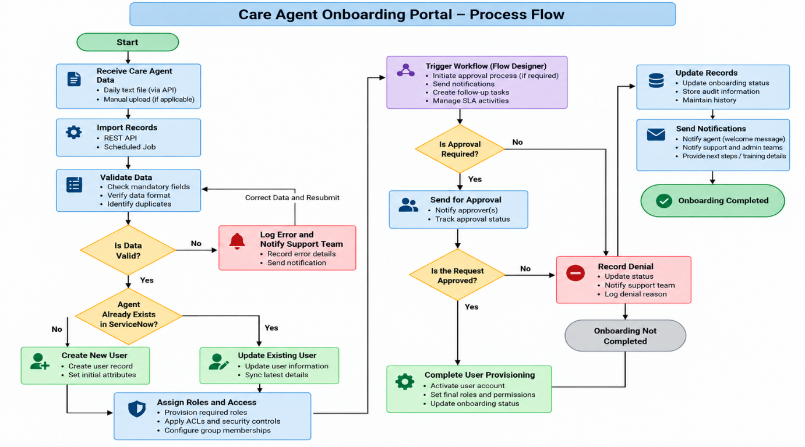
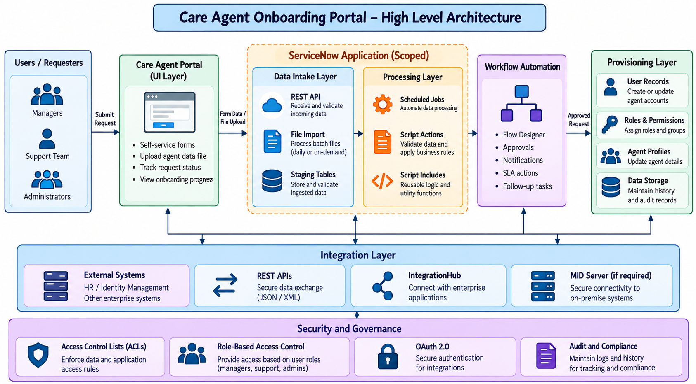
Outcome:
The implementation of the Care Agent Onboarding Portal enhanced the onboarding process by minimizing manual tasks, streamlining user provisioning, and facilitating the management of both new and existing Care Agent information. According to current project metrics, the automated solution decreased onboarding lead time by approximately 40%, enabling new agents to obtain necessary access and commence work more quickly.
Previously, the onboarding process was highly manual, requiring tasks such as collecting agent information, verifying data, creating user accounts, assigning appropriate roles, and coordinating with multiple support teams. Integrating this process into ServiceNow has resulted in a more structured and consistent onboarding experience.
Key Improvements and Business Benefits
Accelerated agent onboarding: Automated the processing of agent data using REST APIs, scheduled jobs, and server-side scripts. This automation reduced manual data entry time and enabled support teams to process onboarding requests more efficiently.
Decreased manual workload: Automated repetitive tasks, including validating incoming records, creating new user accounts, updating agent details, and assigning appropriate roles. As a result, administrative and support teams could allocate more time to tasks requiring specialized input.
Enhanced data accuracy: Implemented automated validation to verify required fields, validate incoming data, and check for existing user records prior to processing. This reduced duplicate records, incorrect user entries, and common data entry errors.
Improved workflow management: Utilized ServiceNow Flow Designer to manage approvals, notifications, and follow-ups. This resulted in a more consistent onboarding process and significantly reduced manual communication among managers, administrators, and support staff.
Enhanced security and access control: Implemented role-based permissions and Access Control Lists (ACLs) to regulate access to sensitive agent information. Users received access according to their roles, ensuring sensitive onboarding information remained protected from unauthorized access.
Improved visibility and tracking: Provided a central portal for authorized users to submit onboarding requests, monitor progress, and view relevant updates. Recording onboarding status and request history in ServiceNow facilitated easier tracking and identification of delays by support teams.
Improved system integration: Used ServiceNow Automated Test Framework (ATF) to validate onboarding functionality, test workflows, and identify issues when application changes were introduced. This supported more consistent testing and reduced the risk of existing features being affected by new updates
CATS – Customer Appeals Tracking System
CATS is an enterprise customer service application supporting escalated, high-visibility customer appeals in transportation, logistics, and package delivery. The documented ServiceNow solution centralizes case context, investigations, guidance, knowledge, tasks, AI-assisted recommendations, and enterprise logistics integrations in a controlled Agent Workspace. An Azure-to-ServiceNow data and process migration is included below as a proposed extension.
Business Problem
Escalated customer appeals require structured investigation, access to shipment and order context, consistent resolution steps, and coordination across Operations, Customer Service, and Logistics. Fragmented tools, manual coordination and disconnected case histories increase investigation effort and impair visibility. CATS addresses these needs with a central agent experience and guided workflows.
Agent Workspace and Case Experience
Configured a dedicated Agent Workspace to centralize case details, customer and account context, interactions, related tasks, knowledge, and integration results.
Designed Playbooks guiding investigation, evidence review, customer communication, escalation, resolution, and closure.
Developed reusable UI Actions, Business Rules, Script Includes and client/server logic for case-specific behavior.
Configured CSM account/contact models and branded customer-facing experiences where required.
Integrated Knowledge Management and Virtual Agent capabilities to surface relevant content and improve self-service.
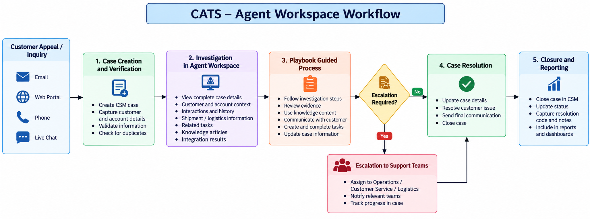
Azure-to-ServiceNow Migration: Boundaries and Assumptions
This design assumes a legacy or parallel Azure-hosted CATS data source. It describes transferring selected business records and process behavior to ServiceNow, not migrating Azure compute, databases, or networking resources into ServiceNow. Where needed, Azure infrastructure metadata may separately be discovered or synchronized into CMDB Configuration Items (CIs). The source systems, schemas, data volumes, migration tools and permissions must be confirmed during discovery.
Migration stage | Technical activities |
|---|---|
Source assessment | Profile Azure SQL or application APIs; identify cases, customers, contacts, notes, status history, files, retention and sensitive information. |
Extraction and staging | Use approved exports/APIs or Azure Data Factory / Logic Apps if applicable; use secure staging, audit logs and validation. |
Mapping and transformation | Resolve account/contact references first; map source case IDs to correlation IDs and transform case owner, state, priority and timestamps. |
ServiceNow ingestion | Use Import Sets / Transform Maps for suitable data; supported APIs and attachment operations for related records; retain idempotent replay keys. |
Validation and cutover | Reconcile counts, references and attachments; verify ACLs, Voyage links and workflows; run ATF/UAT and plan rollback. |
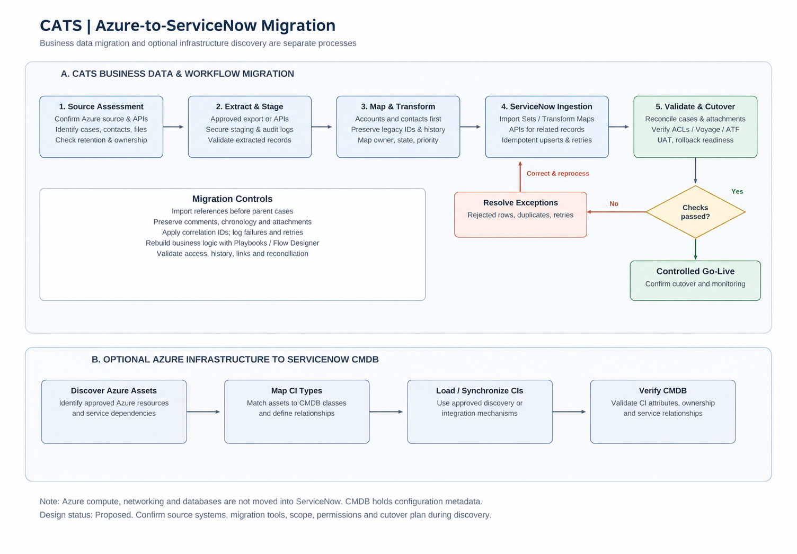
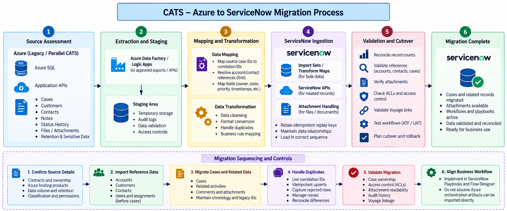
Proposed Migration Sequencing and Controls
Confirm source contracts, Azure hosting products, volume, retention, classification, and business ownership before implementation.
Import and reconcile accounts, customers, contacts, and user/assignment reference data before creating parent cases.
Migrate cases, related activities, comments and attachments in dependency order; preserve chronology and legacy IDs.
Handle duplicate records through correlation IDs/idempotent upsets; capture rejected rows, retries and reconciliation differences.
Validate migration outcomes against case ownership, access control, attachment readability, audit history and Voyage linkage.
Align business workflow behavior in ServiceNow Playbooks and Flow Designer rather than assuming Azure orchestration artifacts can be imported directly.
AI Agent and Agentic Workflow Design
Implemented AI-assisted workflows to retrieve shipment and customer case context.
Analyzed historical escalations and resolution patterns to support recommended next-best actions.
Identified relevant Knowledge Articles for agents during case handling.
Created follow-up tasks for operations, customer service, and logistics support teams when additional action was required.
Applied ACL and role checks around AI-enabled capabilities to prevent unauthorized access to sensitive information.
CATS End-to-End Architecture
The CATS architecture uses ServiceNow to manage customer complaints, escalations, and case resolutions in one centralized platform. Agents can access customer details, track cases, and manage tasks through Agent Workspace, while Playbooks and Flow Designer automate routine activities. AI Agents help with investigations and recommend next steps, and the Voyage integration provides shipment and logistics information through secure REST APIs. The solution also includes a proposed Azure-to-ServiceNow migration for transferring existing case data and a CMDB integration to track infrastructure and application dependencies. Security controls and automated testing help keep the system secure, reliable, and easy to maintain.
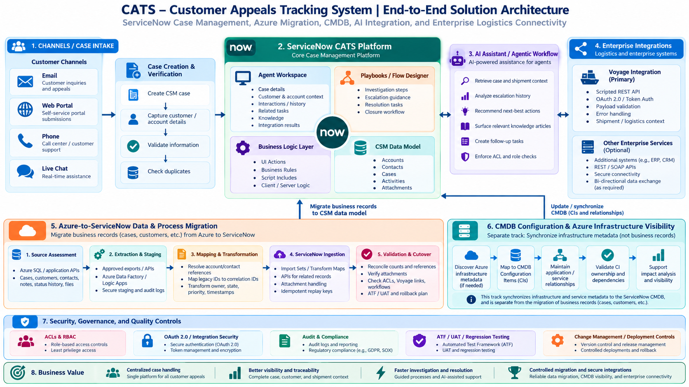
Voyage Integration
A custom Scripted REST API was designed to exchange escalated case and logistics information between ServiceNow and Voyage. OAuth 2.0 / token-based authentication, payload validation, reusable integration logic, and controlled error handling were used to keep the interface secure and supportable.
Outcome:
Outcome:The CATS project improved customer service by bringing case management, customer information, and shipment details into one ServiceNow platform. Automated workflows and AI-assisted features helped reduce manual work and made case handling easier and faster. Integration with Voyage improved access to logistics information and supported better coordination between teams. The solution also improved security and case tracking, while the proposed Azure migration and CMDB integration aim to improve data management and system visibility.
Key Improvements and Business Benefits
Improved Customer Service: Provides a centralized platform to manage customer complaints, escalations, and case information, helping agents resolve issues more efficiently.
Reduced Manual Work: Uses ServiceNow Playbooks, Flow Designer, and AI-assisted features to automate repetitive tasks and simplify case handling.
Faster Case Resolution: Helps agents access customer details, shipment information, and previous case history in one place, reducing investigation time.
Better Team Collaboration: Improves communication and task coordination between Customer Service, Operations, and Logistics teams.
Improved System Integration: Connects ServiceNow with Voyage through secure REST APIs, making shipment and logistics information easier to access.
Stronger Security and Visibility: Uses role-based access controls to protect sensitive information while improving case tracking and accountability.
Better Data and Infrastructure Management: The proposed Azure-to-ServiceNow migration and CMDB integration aim to improve data consistency, application dependency tracking, and system visibility.
Delivery Delay Automation
The provided project source describes a logistics automation scenario in which separate Logistics, Retail, and Delivery ServiceNow instances created communication delays and manual coordination when a route exceeded its ETA window. The solution automated delay detection, impact calculation, and target-instance status updates.
Source-Defined Problem
Delivery delays were recorded but not consistently communicated to the target instance.
Dispatch statuses were not automatically updated.
Manual coordination created bottlenecks and SLA violations.
The business needed real-time delay calculations, automated status propagation, financial-impact tracking, and auditable orchestration.
Source-Defined Architecture
Instance | Primary Role | Implementation Elements |
|---|---|---|
Logistics | Initiates route execution | Flow/orchestration trigger; route execution request |
Retail | Calculates ETA and penalty impact | Custom scripted logic, flow variables, AI Agent analysis |
Delivery | Updates delivery execution status | GlideRecord update logic and target-record status update |
The source also identifies a custom Delivery Delay table, an AI role named “Delivery Delay Analyzer,” scripted status-update logic, integration credentials, and monitoring for repeated failures.
Delivery Delay Automation Workflow
Workflow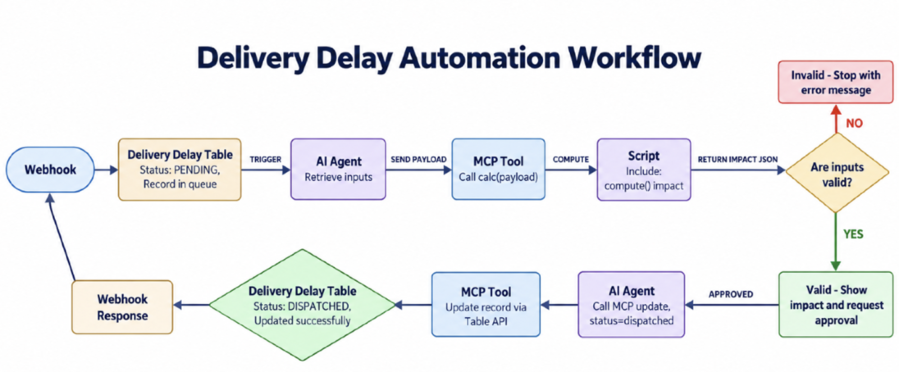
End-to-end workflow showing webhook intake, AI Agent input retrieval, MCP calculation, Script Include impact computation, validation/approval, dispatch status update, and webhook response.
Agentic MCP Architecture
hitecture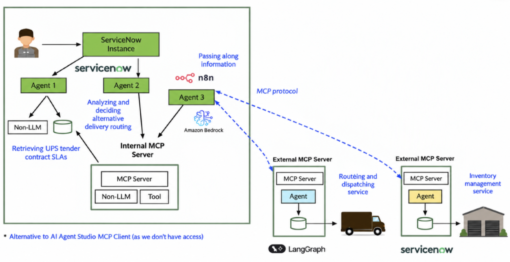
High-level architecture showing the ServiceNow instance, AI agents, internal MCP server and external MCP services supporting rerouting, dispatching, and inventory-management use cases.
End-to-End Flow
Receive the route/delivery event and retrieve the required inputs.
Evaluate ETA variance and delivery-window conditions.
Calculate penalty or business-impact values when the delivery is late.
Persist or update the Delivery Delay record.
Invoke the target update step to synchronize delivery execution status.
Monitor integration/system logs for patterns such as record-not-found responses or 502 failures.
Raise proactive alerts for recurring anomalies and preserve audit data for troubleshooting.
Source-Reported Results
Average dispatch update time reduced from approximately 20 minutes to under 3 seconds.
Manual entry was eliminated across the three participating departments.
The source reports full synchronization across Logistics, Retail, and Delivery for the implemented scenario.
AI-enhanced monitoring helped detect recurring failure patterns earlier.
Data consistency improved across participating instances.
Screenshot | Description |
|---|---|
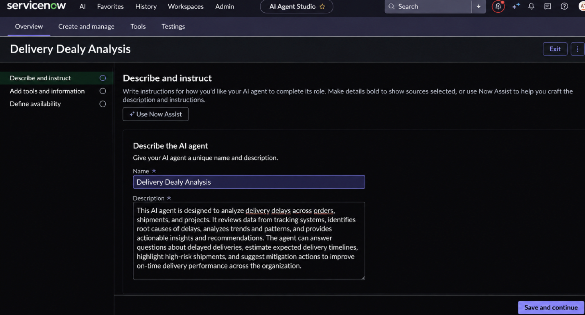 | AI Agent Prompt – Shows the final AI Agent prompt configuration used to parse ETA, delivery window, and penalty rate inputs before calling the MCP tool. |
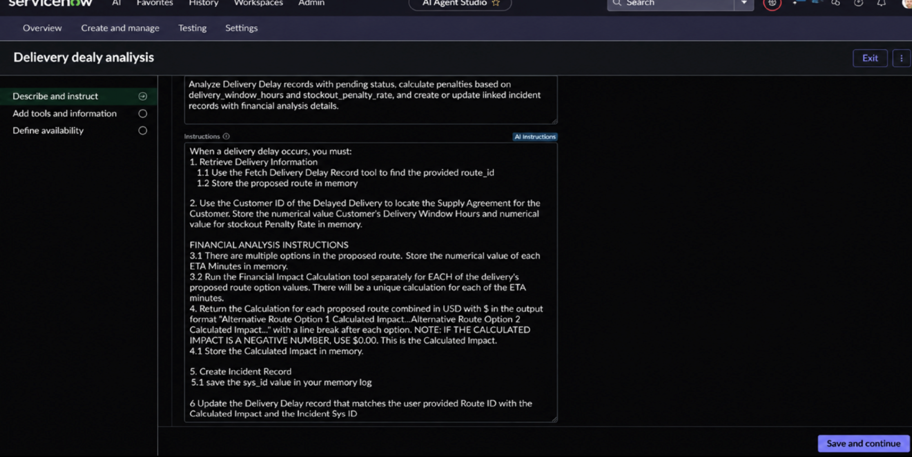 | AI Agent Configuration – Displays the step-by-step AI Agent Studio configuration, including role statement, agent steps, and connected MCP reference. |
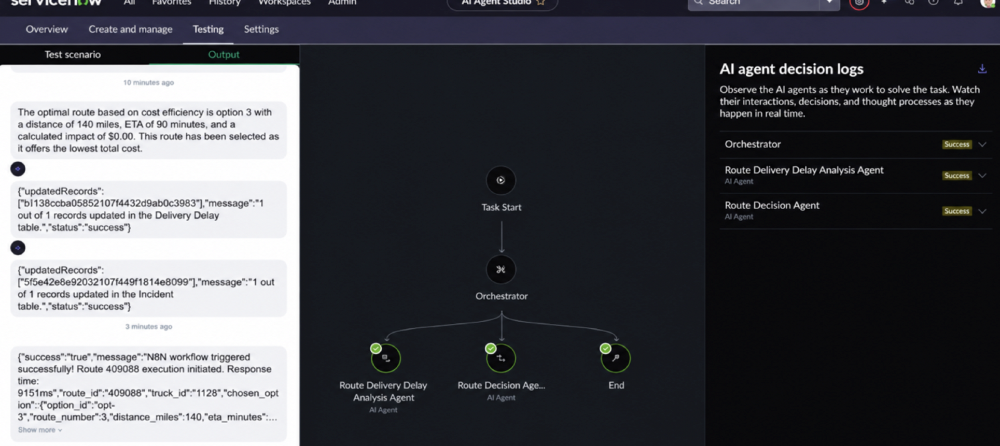 | AI Agent Test Output – Displays the AI Agent execution results, including calculated impact, status update to “Dispatched,” and successful MCP-to-table record validation. |
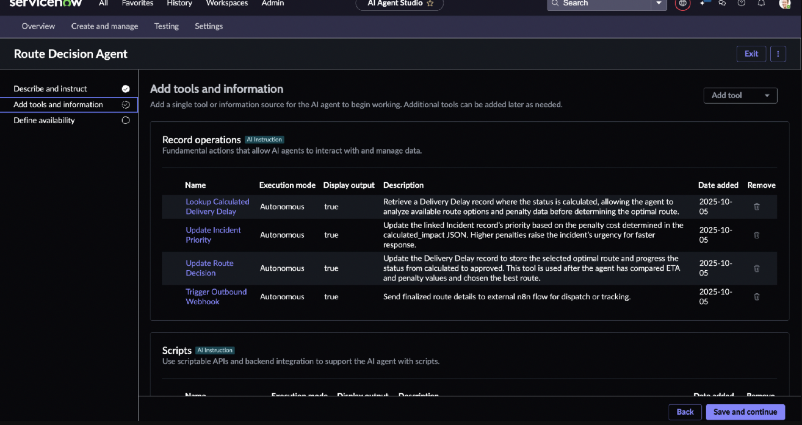 | AI Agent Tools – Displays the configuration of tools connected to the Route Decision Agent within AI Agent Studio, including the MCP for route validation and the Script Include for automated decision logic execution. |
Consolidated Technical Architecture
Experience Layer: Agent Workspace, UI Builder, Service Portal, Virtual Agent, reusable UI components.
Application Layer: Scoped Applications for Care, CATS, and supporting logistics automation.
Workflow Layer: Flow Designer, Playbooks, Script Actions, Scheduled Jobs, SLA and notification logic.
Intelligence Layer: AI Agents / agentic workflows, Now Assist / Generative AI, knowledge recommendations, case summarization and next-best-action assistance.
Integration Layer: Scripted REST APIs, REST/SOAP services where required, IntegrationHub, MID Server, OAuth 2.0, Personal Access Tokens.
Data/Security Layer: CSM data model, custom tables, ACLs, role-based security, audit history, Change Requests.
Engineering Layer: Git-based source control, Azure DevOps CI/CD, App Repository, Update Sets where appropriate, ATF.
Data Model and Logic
Filed | Type | Description |
|---|---|---|
route_id | Integer | Unique delivery route identifier |
status | String | Current delivery state |
eta_minutes | Integer | Time in minutes for ETA |
stockout_penalty_rate | Decimal | Cost impact rate for delays |
calculated_impact | Decimal | Computed penalty value |
instance_name | String | Source instance of record |
last_updated | Date/Time | Audit trail field for change tracking |
Screenshot | Description |
|---|---|
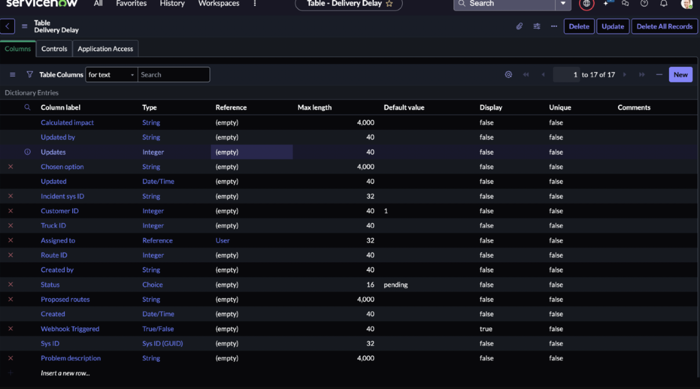 | Delivery Delay Table – Displays stored logistics records containing ETA minutes, delivery window hours, penalty rates, and calculated impact values used by the AI Agent for delay analysis. |
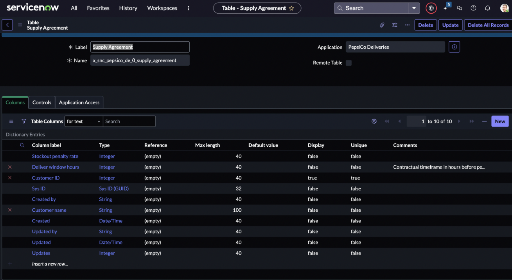 | Supply Agreement Table – Contains supplier, route, and contractual terms data referenced by the AI Agent during route validation and decision-making. |
AI Agent Configuration
AI Agent Name: CATS Case AssistantGoal: Analyze escalated customer cases, retrieve shipment and case context, identify relevant knowledge, and recommend next-best actions for the agent.
Steps implemented in AI Agent Studio:
Studio:Retrieve customer, case, shipment, and escalation details.
Analyze case history, priority, and related shipment information.
Identify relevant Knowledge Articles and similar resolution patterns.
Recommend next-best actions for the support agent.
Create follow-up tasks for Operations, Customer Service, or Logistics when required.
Update case information and support customer communication based on the recommended action.
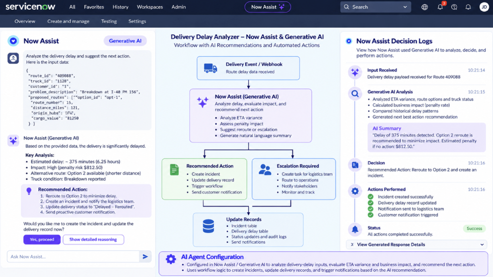
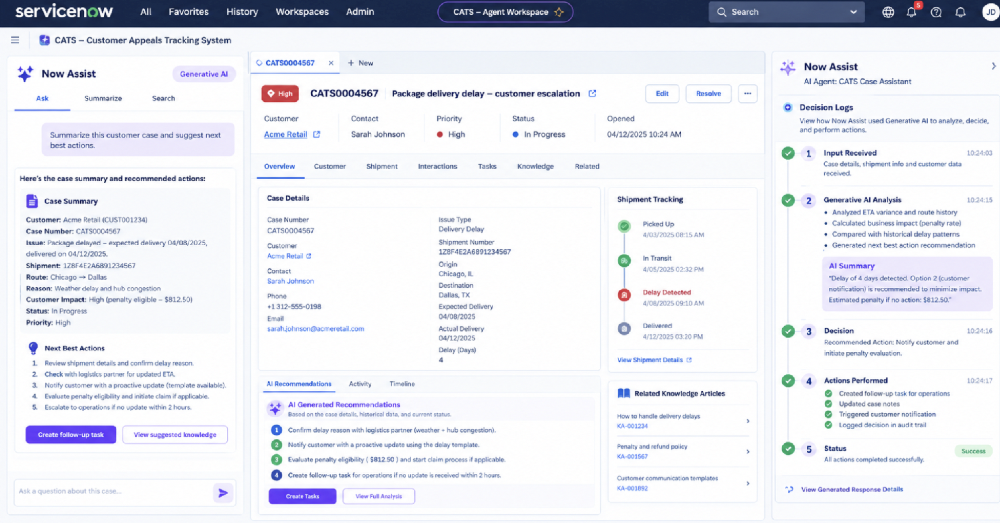
Delivery Delay Analyzer Configuration
AI Agent Name: Delivery Delay AnalyzerGoal: Analyze delivery delays and determine the appropriate priority and next action based on ETA deviation, route conditions, and business impact.
Steps implemented in AI Agent Studio:
Retrieve delivery, route, and incident details through configured inputs.
Analyze ETA deviation against the expected delivery window.
Evaluate route conditions and potential penalty or business impact.
Determine the delay severity using configured evaluation criteria.
Recommend an escalation, rerouting, or automated status-update path.
Trigger follow-up actions such as record updates, task creation, and notifications.
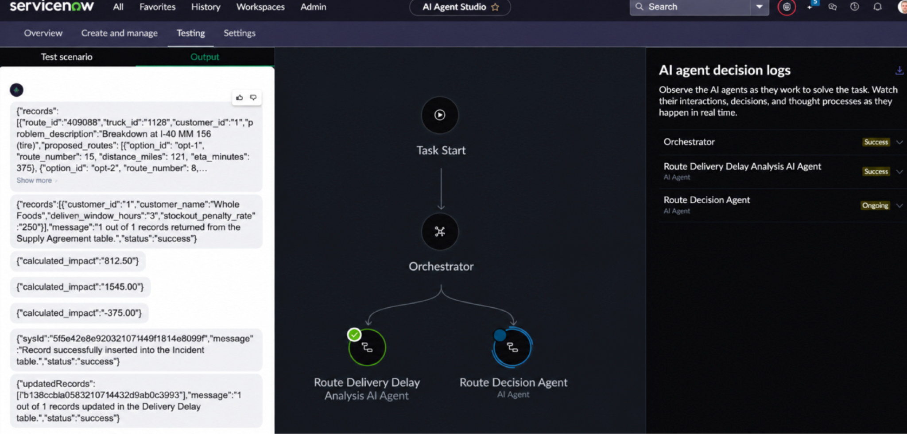
MCP Orchestration and AI Agent Logic
The orchestration was built in AI Agent Studio and controlled using MCP integration steps.
Step 1 – execute_route: Initiates the delivery route.
Step 2 – notify_delivery_delay: Calculates ETA variance and penalty rate.
Step 3 – update_execution_status: Updates the delivery record in the target instance.
Key Script Logic
(function(inputs) {
var routeId = parseInt(inputs.route_id);
var status = inputs.status || 'pending';
var gr = new GlideRecord('x_snc_ups_de_0_delivery_delay');
gr.addQuery('route_id', routeId);
gr.query();
if (gr.next()) {
gr.status = status;
gr.update();
return { success: true, updated: gr.getUniqueValue() };
} else {
return { success: false, error: 'Record not found' };
}
})(inputs);Payload JSON Configuration – Shows the MCP tool setup with request and response payloads used to validate routes and update delivery records.
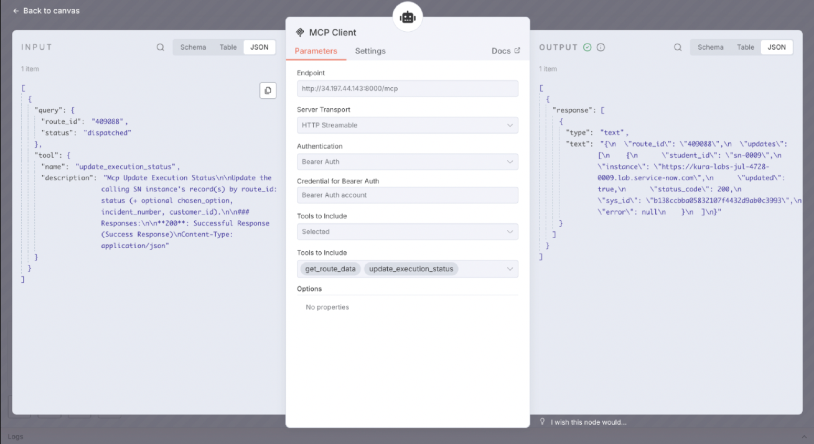
Successful MCP Execution – Displays the MCP tool successfully executing the update request, confirming route decision processing and record validation.
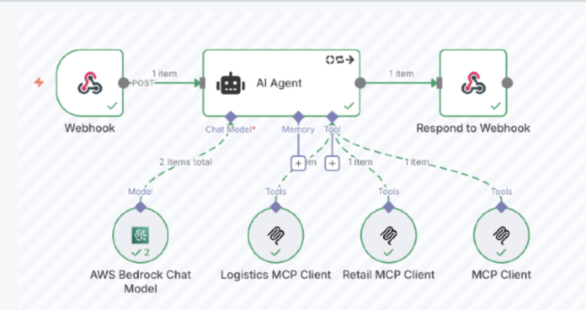
AI-Enhanced Monitoring and Error Handling
A secondary AI Agent monitors MCP logs and ServiceNow system logs for recurring error patterns such as “Record not found” or 502 failures.
Collects error messages via Flow API call
Feeds data into AI Agent Studio for pattern learning
Flags anomalies and generates a proactive alert
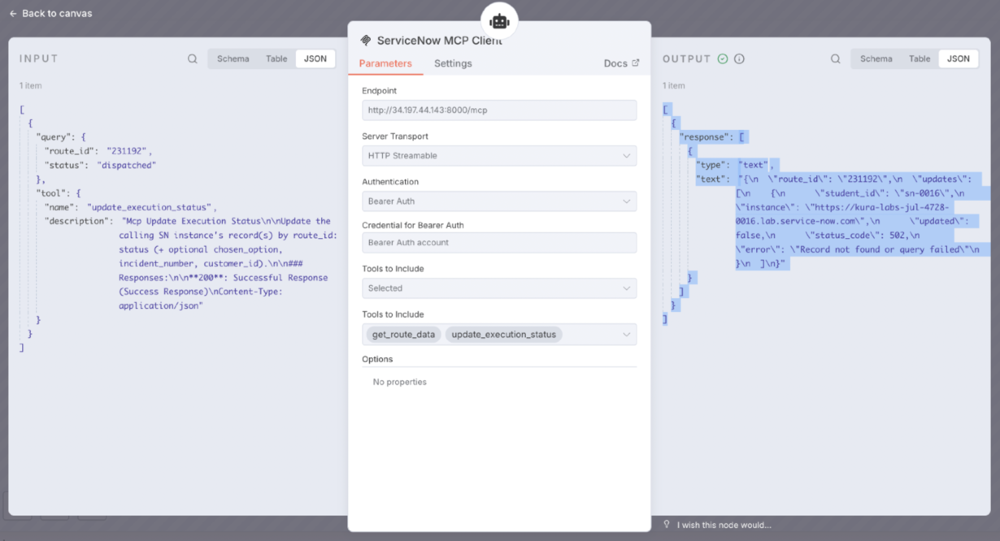
Example of Failed Request Log – Shows the MCP execution error output during a failed route update attempt, useful for debugging payload or instance configuration issues.
Results:
Average dispatch update time reduced from 20 minutes to under 3 seconds.
Manual entry has been eliminated across all three departments.
100% synchronization between Logistics, Retail, and Delivery systems.
Early anomaly detection via AI monitoring reduced repeat failures.
Data consistency improved across all instances
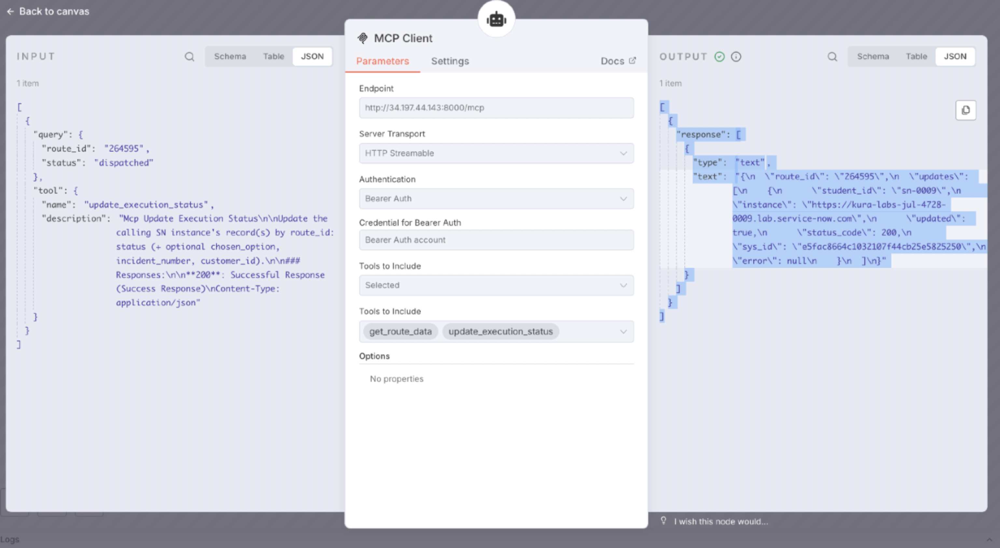
Comparison of 502 Failure vs Success – Displays the difference between a failed MCP request (502 error) and a successful execution, showing how payload validation and instance targeting affect response outcomes.
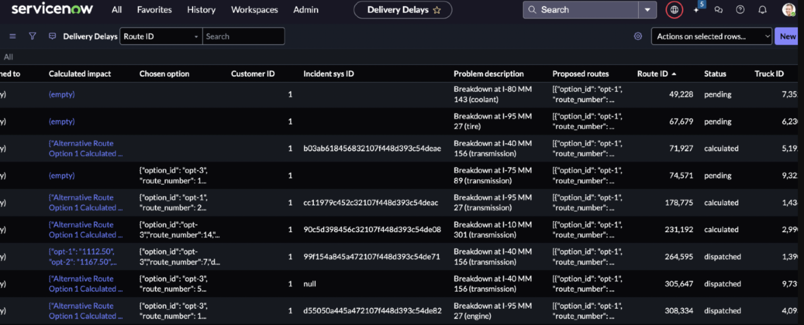
Record Update Audit Log – Shows the system audit trail confirming the record update, including the status change to “dispatched” after successful MCP processing.
Security and Compliance
Implemented table-, record-, and field-level ACLs to enforce least-privilege access.
Separated application logic in scoped applications to reduce unintended cross-scope access.
Secured inbound and outbound integrations using OAuth 2.0 and token-based authentication.
Applied additional security controls around AI-enabled workflows so retrieved context and generated actions remained within authorized data boundaries.
Linked release artifacts with Change Requests to preserve audit traceability for production deployments.
Used controlled service accounts/integration users with only the permissions needed by each interface.
Release Management
Used CI/CD pipelines for automated validation and promotion, reducing risk from manual deployment activity.
Published scoped applications to the ServiceNow App Repository and promoted approved versions across environments.
Maintained Change Request linkage for production releases and audit evidence.
Built ATF coverage for critical integration, case management, and scoped application behaviors.
Performed pre-release validation, defect triage, post-deployment smoke testing, and rollback/fail-safe checks.
Key Learnings
Lesson | Takeaway |
|---|---|
Instance targeting is explicit | Make sure your Bearer Auth token is associated with the correct “instance” |
Cross-scope ACLs matter | Keep permissions scoped properly to avoid query blocks |
AI Agents amplify insight | Automating error categorization accelerates fixes |
GlideRecord precision | Data type consistency prevents silent failures |
Future Enhancements and Optimization Opportunities
Predictive ETA Forecasting
Integrate an ML model using AWS SageMaker or ServiceNow’s AI Controller to predict delays based on traffic, weather, and driver performance.
Intelligent Root Cause Analysis
Use Predictive Intelligence clustering to detect recurring delivery bottlenecks across regions.
Dynamic Workflow Reassignment
Enable AI Agents to auto-reroute or reassign deliveries based on real-time conditions.
Autonomous MCP Healing
Implement an AI layer that replays failed MCP transactions and auto-retries failed updates without human input.
Visualization Dashboards
Deploy Performance Analytics dashboards showing real-time delivery status, average ETA deviation, and SLA compliance metrics.
Conclusion
The project modernized key business processes by combining ServiceNow automation, integrations, AI-assisted workflows, and secure application design. The Care Agent Onboarding Portal reduced manual onboarding effort and improved user provisioning, while CATS provided a centralized workspace for managing escalated customer cases with guided resolution and AI-supported recommendations. The Delivery Delay Automation solution improved logistics coordination through automated delay detection, impact analysis, and status synchronization. Together, these solutions created a scalable and secure ServiceNow platform that improves operational efficiency, user experience, and enterprise-wide process visibility.